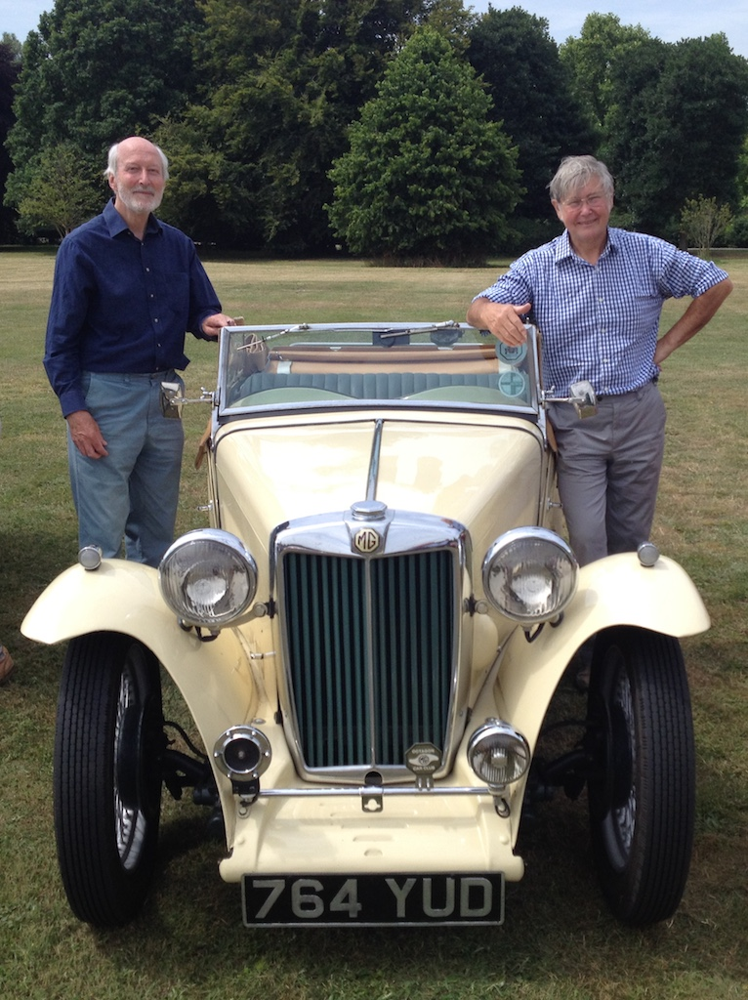
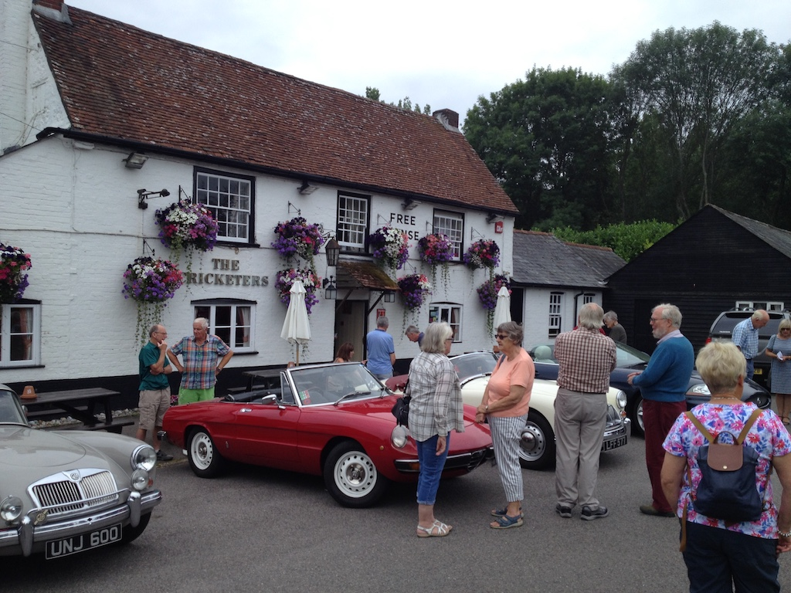
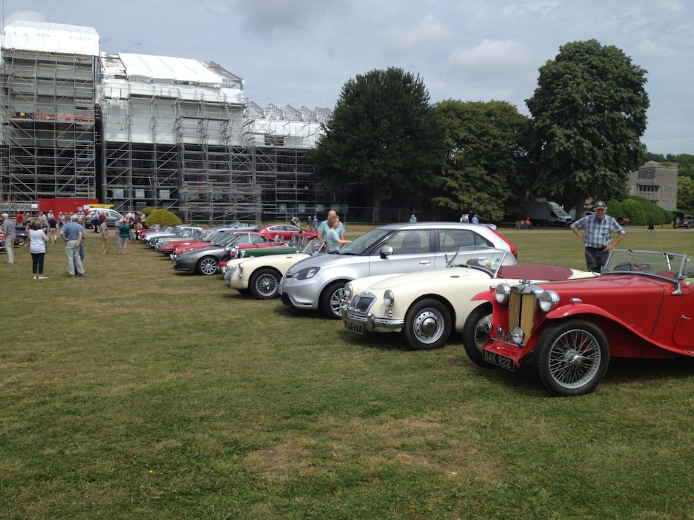
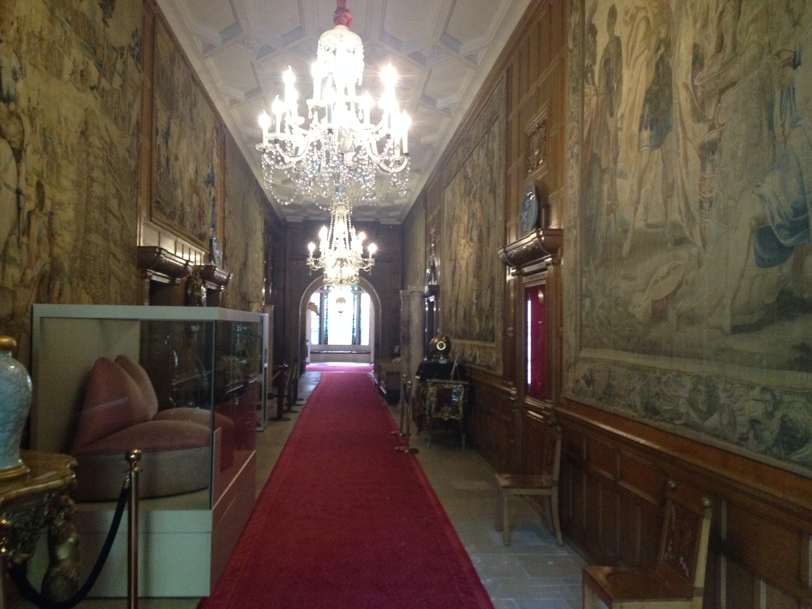
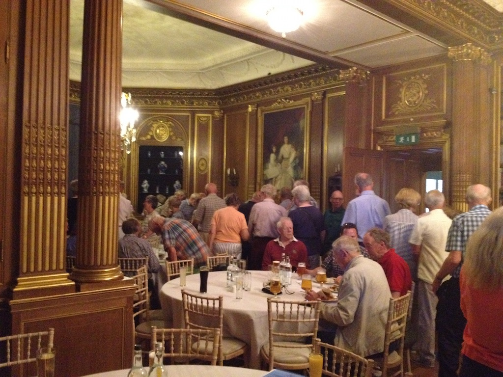

Part of the enjoyment of owning a TC is the opportunity to work on it so as to keep it fit for the road, because driving the car is what it’s all about. Some may say it’s masochism, but I’ll stick to enjoyment. So far during my ownership of TC4985 I’ve driven it around about one thousand miles each year; sometimes a little less, sometimes a little more. I find that, when taking the car on a run, it’s good to have some destination and purpose in mind. The WSMGOC Pub Runs are good in this respect. Sometimes the day of the week doesn’t fit with our other commitments, but setting off in the TC to meet up with other MG owners and to have lunch works well.
Another regular event on which I try to take the TC is the monthly Sussex Wanderers run. This is usually held on the second Wednesday of the month, which means that I generally have to go alone, since Angela is usually busy on Wednesdays. The general format of these runs is to meet for coffee, at a pub or cafe, then follow a printed route of about 25 miles down Sussex (and sometimes Surrey) highways and byways, the narrower and twistier the better, ending at a pub for lunch. There are usually at least 20 MGs taking part, made up of one or two pre-war models, a number of T-types, a few MGAs, some midgets, lots of Bs, some Fs and TFs and even a modern Chinese MG. Even the occasional Morris 1000, Jaguar or Alfa Romeo take part if the owner’s MG is not on the road at that time.
The July run of the Sussex Wanderers was towards the West, starting at Duncton and ending at West Dean. It was a dry, if overcast day and TC4985 took me from Steyning to Lyminster to pick up David before going to the Cricketer’s pub at Duncton for coffee and an inspection of some of the MGs (and not MGs) taking part. Since it was a dry, warm day, there was no need to have the hood up, but a hat was essential if your head, like mine, is a little short of natural covering. Many of the cars (and there were about 36) set off before us, but we soon caught some ahead of us. So although it was necessary to monitor the route sheet carefully (people have been known to take a wrong turn or miss one all together) we were able to follow others for most of the route. David navigated well, keeping an eye on the odometer (on the TC the speedometer is in front of the passenger) and calling out the impending turns and landmarks. He only grabbed the handle on the dash a few times during the run! The combination of bumpy roads, a hard suspension, slippery seats and no safety belts does require the occasional steadying hand. The shortest route between Duncton and West Dean is only about eight miles, but our twisting and turning route was just over 20 miles, a little shorter than usual for a Wanderers run. We drove down the usual combination of country lanes through woodland and farm land, together with short stints on more major roads. Other road users, held up by a convoy of classic MGs, were as patient as usual, with a wave and a smile, although we couldn’t hear any curses coming from between gritted teeth.
There are many public houses in our area that serve very good food. Some are better organised than others for large parties descending upon them all at once, but the organisers of the Wanderers runs do pretty well. However, on this occasion our destination was not a pub, but West Dean College. Whereas we normally pre-order from the pub’s menu, at West Dean we were to have a buffet and only had to order drinks. As you can see from the photo, we parked on the grass in front of the college (I couldn’t get the facing row of cars into the shot). You will also notice that the college is undergoing a degree of restoration. In fact, the whole roof is being replaced due to rotten timbers. It was said that they have spent £6M on the project already!
The full name of the college is West Dean College of Arts and Conservation (you may say that they had not conserved their building very well). Apparently they run about 800 courses, from one-day courses through to full degree programmes. Angela and I had been to the gardens, which are well worth a visit, but the building, the former home of Edward James (poet, artist, designer, and patron of the Surrealist Movement) is not open to the public. After gathering in a panelled hall we all walked down the corridor in the photo, past tapestries, Salvador Dali’s Mae West Lips Sofa and his Lobster Telephone, to the old library where our buffet awaited us. It seems that the house was mentioned in the Doomsday Book, but was bought by the James family (unfortunately no relations) in 1891. The Edward James Foundation, a charitable educational trust, was established in 1964 and West Dean College was opened in 1971 as a centre for education and training in conservation and in the visual and applied arts.
So 70 of us sat down for lunch that day, the maximum number that they could squeeze in to the old library. As you can see, it is quite an impressive room, with chandeliers and guilt-ladened panelling, plus the occasional ionic column. The buffet was varied and there was plenty of it. Certainly all the MG’ers seemed to enjoy it and it is the most refined lunch venue that I’ve experienced with the Wanderers, which has included the Old Control Tower at the Goodwood circuit as well as many pubs. As usual on these runs the participants are varied, friendly and the talk is not all about old cars. Also as usual, the run was enjoyed by several other members of the West Sussex MG Owners Club. Certainly David and I had a good day out.
Those on the run then had the opportunity to walk around the gardens, although David and I decided it was time to make our way home. So TC4985 had quite a good outing, covering a total of 92 miles that day. This is what MG ownership is all about; fettling the car to enable it to do such a run, driving a car that is so different to your daily run-about, meeting with friendly people who have at least one similar interest and having good food in the process.
(Written 9th August 2019; published in WSMGOC Main Gear, September 2019.)
© David James 2020 Last updated: 2nd May 2020